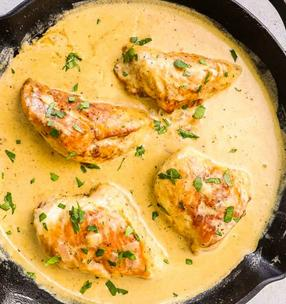

Fried Honey Mustard Chicken

Description
A quick recipe with complex flavors to impress your significant other. Inspired by a traditional Greek chicken recipe.
- 30 min prep
- 30 min cook
Ingredients
- 4 chicken breast fillets, in chunks
- 150ml white wine
- 5-6tbsp dijon mustard
- 1tsp honey
- 50ml olive oil
- meat spice mix
- salt and pepper
Steps
- Add oil, salt, pepper and spice mix in a large bowl. Add chicken and marinate thoroughly.
- Add pan on high heat. Once heated, empty bowl into the pan. Sautee chicken for 5-10 minutes.
- Add wine and sautee for an additional 5 minutes or until the alcohol has evaporated.
- Add the mustard and honey and mix well. I recommend a bitter tasting honey such as heather honey, but any flavor will do.
Return to home